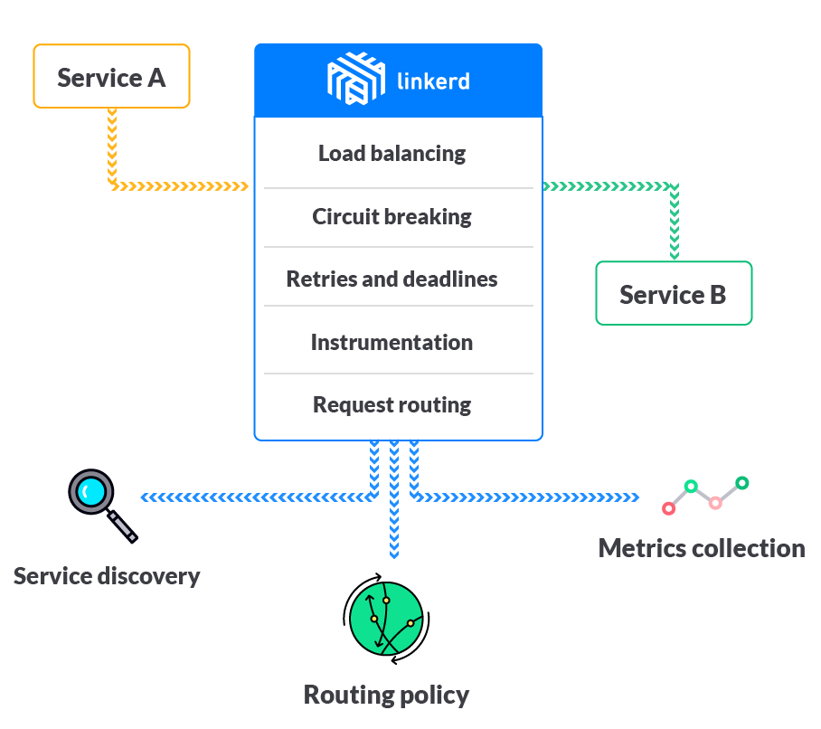
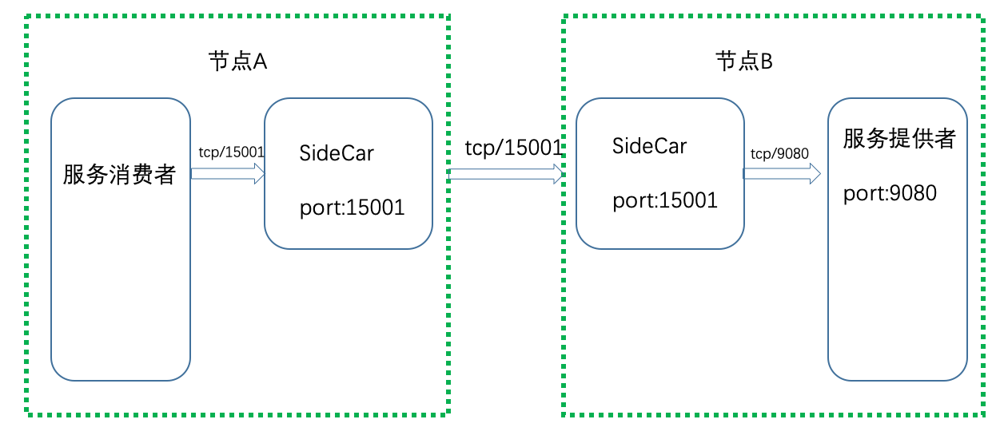

- 00 开篇词 微服务，从放弃到入门.md.html
- 01 到底什么是微服务？.md.html
- 02 从单体应用走向服务化.md.html
- 03 初探微服务架构.md.html
- 04 如何发布和引用服务？.md.html
- 05 如何注册和发现服务？.md.html
- 06 如何实现RPC远程服务调用？.md.html
- 07 如何监控微服务调用？.md.html
- 08 如何追踪微服务调用？.md.html
- 09 微服务治理的手段有哪些？.md.html
- 10 Dubbo框架里的微服务组件.md.html
- 11 服务发布和引用的实践.md.html
- 12 如何将注册中心落地？.md.html
- 13 开源服务注册中心如何选型？.md.html
- 14 开源RPC框架如何选型？.md.html
- 15 如何搭建一个可靠的监控系统？.md.html
- 16 如何搭建一套适合你的服务追踪系统？.md.html
- 17 如何识别服务节点是否存活？.md.html
- 18 如何使用负载均衡算法？.md.html
- 19 如何使用服务路由？.md.html
- 20 服务端出现故障时该如何应对？.md.html
- 21 服务调用失败时有哪些处理手段？.md.html
- 22 如何管理服务配置？.md.html
- 23 如何搭建微服务治理平台？.md.html
- 24 微服务架构该如何落地？.md.html
- 25 微服务为什么要容器化？.md.html
- 26 微服务容器化运维：镜像仓库和资源调度.md.html
- 27 微服务容器化运维：容器调度和服务编排.md.html
- 28 微服务容器化运维：微博容器运维平台DCP.md.html
- 29 微服务如何实现DevOps？.md.html
- 30 如何做好微服务容量规划？.md.html
- 31 微服务多机房部署实践.md.html
- 32 微服务混合云部署实践.md.html
- 33 下一代微服务架构Service Mesh.md.html
- 34 Istio：Service Mesh的代表产品.md.html
- 35 微博Service Mesh实践之路（上）.md.html
- 36 微博Service Mesh实践之路（下）.md.html
- 微博技术解密（上） 微博信息流是如何实现的？.md.html
- 微博技术解密（下）微博存储的那些事儿.md.html
- 结束语 微服务，从入门到精通.md.html
- 阿忠伯的特别放送 答疑解惑01.md.html
- 阿忠伯的特别放送 答疑解惑02.md.html
- 捐赠
33 下一代微服务架构Service Mesh
今天我们将进入专栏最后一个模块，我会和你聊聊下一代微服务架构Service Mesh。说到Service Mesh，在如今的微服务领域可谓是无人不知、无人不晓，被很多人定义为下一代的微服务架构。那么究竟什么是Service Mesh？Service Mesh是如何实现的？今天我就来给你解答这些疑问。
什么是Service Mesh？
Service Mesh的概念最早是由Buoyant公司的CEO William Morgan在一篇文章里提出，他给出的服务网格的定义是：
A service mesh is a dedicated infrastructure layer for handling service-to-service communication. It’s responsible for the reliable delivery of requests through the complex topology of services that comprise a modern, cloud native application. In practice, the service mesh is typically implemented as an array of lightweight network proxies that are deployed alongside application code, without the application needing to be aware.
专栏里我就不解释教条的定义了，感兴趣的话你可以点击链接阅读原文，这里我来谈谈我对Service Mesh的理解。我认为是Service Mesh是一种新型的用于处理服务与服务之间通信的技术，尤其适用以云原生应用形式部署的服务，能够保证服务与服务之间调用的可靠性。在实际部署时，Service Mesh通常以轻量级的网络代理的方式跟应用的代码部署在一起，从而以应用无感知的方式实现服务治理。
从我的理解来看，Service Mesh以轻量级的网络代理的方式与应用的代码部署在一起，用于保证服务与服务之间调用的可靠性，这与传统的微服务架构有着本质的区别，在我看来这么做主要是出于两个原因。
1.跨语言服务调用的需要。在大多数公司内通常都存在多个业务团队，每个团队业务所采用的开发语言一般都不相同，以微博的业务为例，移动服务端的业务主要采用的是PHP语言开发，API平台的业务主要采用的是Java语言开发，移动服务端调用API平台使用的是HTTP请求，如果要进行服务化，改成RPC调用，就需要一种既支持PHP语言又支持支持Java语言的的服务化框架。在专栏第14期我给你讲解了几种开源的服务化框架，它们要么与特定的语言绑定，比如Dubbo和Spring Cloud只支持Java语言，要么是跟语言无关，比如gRPC和Thrift，得定义个IDL文件，然后根据这个IDL文件生成客户端和服务端各自语言的SDK，并且服务框架的功能比如超时重试、负载均衡、服务发现等，都需要在各个语言的SDK中实现一遍，开发成本很高。
2.云原生应用服务治理的需要。在专栏前面，我给你讲解了微服务越来越多开始容器化，并使用Kubernetes类似的容器平台对服务进行管理，逐步朝云原生应用的方向进化。而传统的服务治理要求在业务代码里集成服务框架的SDK，这显然与云原生应用的理念相悖，因此迫切需要一种对业务代码无侵入的适合云原生应用的服务治理方式。
在这种背景下，Buoyant公司开发的第一代Service Mesh产品Linkerd应运而生。从下图中你可以看到，服务A要调用服务B，经过Linkerd来代理转发，服务A和服务B的业务代码不需要关心服务框架功能的实现。为此Linkerd需要具备负载均衡、熔断、超时重试、监控统计以及服务路由等功能。这样的话，对于跨语言服务调用来说，即使服务消费者和服务提供者采用的语言不同，也不需要集成各自语言的SDK。
- （图片来源：https://linkerd.io/images/[email protected]）
而对于云原生应用来说，可以在每个服务部署的实例上，都同等的部署一个Linkerd实例。比如下面这张图，服务A要想调用服务B，首先调用本地的Linkerd实例，经过本地的Linked实例转发给服务B所在节点上的Linkerd实例，最后再由服务B本地的Linkerd实例把请求转发给服务B。这样的话，所有的服务调用都得经过Linkerd进行代理转发，所有的Linkerd组合起来就像一个网格一样，这也是为什么我们把这项技术称为Service Mesh，也就是“服务网格”的原因。
- （图片来源：https://buoyant.io/wp-content/uploads/2017/04/linkerd-service-mesh-diagram-1024x587.png）
Service Mesh的实现原理
根据我的理解，Service Mesh实现的关键就在于两点：一个是上面提到的轻量级的网络代理也叫SideCar，它的作用就是转发服务之间的调用；一个是基于SideCar的服务治理也被叫作Control Plane，它的作用是向SideCar发送各种指令，以完成各种服务治理功能。下面我就来详细讲解这两点是如何实现的。
1.SideCar
我们首先来看一下，在传统的微服务架构下服务调用的原理。你可以看下面这张图，服务消费者这边除了自身的业务逻辑实现外，还需要集成部分服务框架的逻辑，比如服务发现、负载均衡、熔断降级、封装调用等，而服务提供者这边除了实现服务的业务逻辑外，也要集成部分服务框架的逻辑，比如线程池、限流降级、服务注册等。
而在Service Mesh架构中，服务框架的功能都集中实现在SideCar里，并在每一个服务消费者和服务提供者的本地都部署一个SideCar，服务消费者和服务提供者只管自己的业务实现，服务消费者向本地的SideCar发起请求，本地的SideCar根据请求的路径向注册中心查询，得到服务提供者的可用节点列表后，再根据负载均衡策略选择一个服务提供者节点，并向这个节点上的SideCar转发请求，服务提供者节点上的SideCar完成流量统计、限流等功能后，再把请求转发给本地部署的服务提供者进程，从而完成一次服务请求。整个流程你可以参考下面这张图。
我们可以把服务消费者节点上的SideCar叫作正向代理，服务提供者节点上的SideCar叫作反向代理，那么Service Mesh架构的关键点就在于服务消费者发出的请求如何通过正向代理转发以及服务提供者收到的请求如何通过反向代理转发。从我的经验来看，主要有两种实现方案。
- 基于iptables的网络拦截。这种方案请见下图，节点A上服务消费者发出的TCP请求都会被拦截，然后发送给正向代理监听的端口15001，正向代理处理完成后再把请求转发到节点B的端口9080。节点B端口9080上的所有请求都会被拦截发送给反向代理监听的端口15001，反向代理处理完后再转发给本机上服务提供者监听的端口9080。
- 采用协议转换的方式。这种方案请见下图，节点A上的服务消费者请求直接发给正向代理监听的端口15001，正向代理处理完成后，再把请求转发到节点B上反向代理监听的端口15001，反向代理处理完成后再发送给本机上的服务提供者监听的端口9080。

可见，这两种方案最大的不同之处在于，一个是通过iptables网络拦截实现代理转发的，一个是靠直接把请求发送给代理来转发的。基于iptables网络拦截的方式，理论上会有一定的性能损耗，但它的优点是从网络层实现调用拦截，能做到完全的业务无感知，所以适合云原生应用。而直接把请求发送给代理的方式，要求代理层加入业务逻辑，才能把请求转发给对应的服务提供者监听的端口。
2.Control Plane
既然SideCar能实现服务之间的调用拦截功能，那么服务之间的所有流量都可以通过SideCar来转发，这样的话所有的SideCar就组成了一个服务网格，再通过一个统一的地方与各个SideCar交互，就能控制网格中流量的运转了，这个统一的地方就在Sevice Mesh中就被称为Control Plane。如下图所示，Control Plane的主要作用包括以下几个方面：
服务发现。服务提供者会通过SideCar注册到Control Plane的注册中心，这样的话服务消费者把请求发送给SideCar后，SideCar就会查询Control Plane的注册中心来获取服务提供者节点列表。
负载均衡。SideCar从Control Plane获取到服务提供者节点列表信息后，就需要按照一定的负载均衡算法从可用的节点列表中选取一个节点发起调用，可以通过Control Plane动态修改SideCar中的负载均衡配置。
请求路由。SideCar从Control Plane获取的服务提供者节点列表，也可以通过Control Plane来动态改变，比如需要进行A/B测试、灰度发布或者流量切换时，就可以动态地改变请求路由。
故障处理。服务之间的调用如果出现故障，就需要加以控制，通常的手段有超时重试、熔断等，这些都可以在SideCar转发请求时，通过Control Plane动态配置。
安全认证。可以通过Control Plane控制一个服务可以被谁访问，以及访问哪些信息。
监控上报。所有SideCar转发的请求信息，都会发送到Control Plane，再由Control Plane发送给监控系统，比如Prometheus等。
日志记录。所有SideCar转发的日志信息，也会发送到Control Plane，再由Control Plane发送给日志系统，比如Stackdriver等。
配额控制。可以在Control Plane里给服务的每个调用方配置最大调用次数，在SideCar转发请求给某个服务时，会审计调用是否超出服务对应的次数限制。
总结
今天我给你讲解了什么是Service Mesh，以及Service Mesh的实现原理。简单来说，Service Mesh思想的孕育而生，一方面出于各大公司微服务技术的普及，增加了对跨语言服务调用的需求；另一方面得益于微服务容器化后，采用Kubernetes等云平台部署的云原生应用越来越多，服务治理的需求也越来越强烈。Service Mesh通过SideCar代理转发请求，把服务框架的相关实现全部集中到SideCar中，并通过Control Plane控制SideCar来实现服务治理的各种功能，这种业务与框架功能解耦的思想恰好能够解决上面两个问题。
Service Mesh在诞生不到两年的时间里取得令人瞩目的发展，在国内外都涌现出一批具有代表性的新产品，最著名的莫过于Google、IBM领导的Istio，也是Service Mesh技术的代表之作，我会在下一期给你详细讲解。而国内在这一方面也不遑多让，秉承了Service Mesh的思想也走出了各自的实践之路，并且已经开始在线上的核心业务中大规模使用，比如微博的Weibo Mesh、华为公有云Service Mesh以及蚂蚁金服的SOFA Mesh等。
思考题
Service Mesh中SideCar的部署模式是在每个服务节点的本地，都同等部署一个SideCar实例，为什么不使用集中式的部署模式，让多个服务节点访问一个SideCar实例？
欢迎你在留言区写下自己的思考，与我一起讨论。
© 2019 - 2023 Liangliang Lee. Powered by gin and hexo-theme-book.